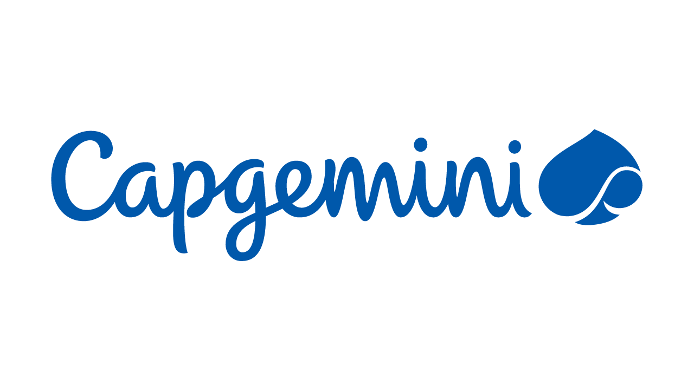

Pizza & Pull Requests - February 2026
Securing LLM stacks, from infra to prompt - Paul Kelly
Paul works for Capgemini and has come from a varied background including fixing issues and did an Electronics Degree and has done everything out there and they completed an MSc in Digital Forensics at Napier in Edinburgh. They are a platform engineer and as part of their role do a lot of solution architecture with a security angle on this.
Who is using LLMs which is about 80% and there may be people doing applications that interact with LLM / GenAI models or use an independent "local" LLM. You can get models locally and put security principles on top of this. Industry trends is using LLMs to do specific or general things which is very good for us. Trends of how things are going through the Gartner hype cycle with innovation trigger, peak of inflated expectations, trough of disillusionment, slope of enlightenment and plateau of productivity. Need to put time and effort into nurturing technologies will see you through this much better, you can set standards and best practices and raise client expectations to make technologies workable and productive.
Security considerations for LLM systems with typical LLM application design, need to consider how typical application design looks like, what security controls are around this, LLM security considerations along with emerging techniques and tactics to bypass any controls. Sovereign LLMs are getting a lot of money to create these such as EU states to create their own LLM which is causing GPUs and RAM to be hard to get due to surge of these but there is a lot of benefit of these with the EU ahead of the UK in what they are doing including frameworks.
Typical LLM application design with LLM model considerations with architectural considerations in protecting LLMs with principals you need to apply to them. Inputs and outputs along with how the system needs to be used along with users and authorisation are the perimeters but also inside the LLM have to put these in place. The main components in the design are the model itself in the centre, there are hundreds of model choices where some of them are well known such as GPT, Anthropic and Deep Seek along with ones that are more specialised and choice of model is important and need to know how it was created and what training data it had. You also want to enrich a model with domain level knowledge, but this is more sensitive so if there is a way to execute the data you want to make sure this isn't disclosed to the internet. Need to consider inputs and outputs such as MCP where this is a defacto standard how these models communicate with each other, you need to think about logging and understand what is going in and out and how people are interacting with it and how developers are changing it.
Platform engineering controls for risks include unique but also familiar issues including supply chain, data loss protection, authentication and authorisation. OWASP top 10 for LLM applications including prompt injection, insecure output handling, training data poisoning, model denial of service, supply chain vulnerabilities, sensitive information disclosure, insecure plugin design, model theft, unauthorised model access and improper error handling. You need to consider the issues where don't trust the client and examples can include prompt injection to get information from the models with either direct injection or indirect injection which can be in something the model is accessing to put the prompt injection in or can inject something into the context. You can also perform jailbreak via role-plat or use url-based injection to get a model to do anything you want it to, you can't separate user input from system input which uses the same methodology and algorithms. Prompts can get more sophisticated with structured data prompts such as XML where can give an LLM specific references to approach a problem which can be used to bypass guardrails of a system. This works as LLMs treat XML as semantic structure not just text and hidden instructions appear to be data so to mitigate you can parse XML strictly to separate data from instructions or sanitise XML, validate with schemas and don't mix data with instructions.
Adversarial poetry can bypass model system prompt guardrails and where development becomes difficult but can be mitigated with output restrictions. You can elude to system keywords which can bypass some restrictions. Instruction-Data conflation is where instructions and system prompts go through the same attention mechanism, no privilege separation, no access controls, just tokens. The fix is architecturally impossible and you cannot defend against creativity but some processes including Tokenbreak, Bad Likert Judge and Deceptive Delight where can break up things in a certain way to get what you want, or get a reward to achieve the goal or give it narratives that a human would pick up but an AI would not and divulge secrets.
How can we protect against these threats? Prompt mitigations include input sanitisation, prompt templates with structured formats, output validation with guardrails to catch policy violations and can use sandboxing the limit access to tools and APIs, monitoring to keep an eye on what is going on to flag unusual request patterns and log all interactions and can have model fine-tuning where you can train on adversarial examples to improve robustness. MCP is a great standard adopted by everyone in the LLM space to allow your API to interact with an LLM where MCP has dynamic resource discovery as AI doesn't know what it needs until it needs it, it is a rich context exchange not just for data but for metadata, relationships and capabilities but you can limit specific access with secure sandboxing where AI can't be trusted with direct system access and bidirectional communication as AI needs to ask questions not just consume data.
LLM gateway cloud provider solutions include Azure API Managements, Azure OpenAI service with Role-based Access Control, Entra ID and managed identity support along with others from AWS and Google Cloud. LLM Gateway benefits including centralised authentication, rate limiting and quotas, request / response validation, API versioning, monitoring and analytics along with cost management. LLM gateway limitations include latency, complexity, limited protocol understanding, vendor lock in and some false security. Adversarial attack vectors on MCP patterns can be issues with OAuth and OIDC attacks along with prompt injection / tool poisoning, supply chain / rug pull along with data exfiltration being issues such as an WhatsApp MCP which exposed data so if you are doing something like this you could be vulnerable to an attack.
Relationship-based access control and open fine-grained authentication can be used if managing a RAG solution but to protect your LLM-based workflows is to limit your scope aggressively, understand your workflows, log everything with granular detail of all calls into your LLM with context, manual oversight during re-introduction and automated reconnections or retraining pipelines should be paused when incidents arise and treat bugs seriously. Agentic AI is the real elephant in the room including OpenClaw with issues where can spoof requests to perform various actions so if want to use these use them very carefully and in controlled way such as VPS to access it. Treat agentic LLMs the same way you would treat any insider threat and aggressively limit their scope so can test your LLM with tools such as Spikee, kailbreakbench, Promptfoo, LLM Guard, Guardrails AI, Open AI Moderation API and Evidently AI.
What did I learn in my first year as an engineering manager - James Sherwood-Jones
James started as a software engineering but switched to a cloudy person and became more cloudy but now works at Pigment as a Site Reliability Manager but they spent nine years saying they'd never be a manager.
Part 1 - not wanting to be a manager - They like computers which is why they did this for a living and they tend to behave and do what you want and didn't want to do messy people stuff and people sometimes do well or not and managers have to deal with that so wasn't interested in that and having to deal with conversations about various things but do stuff on computers instead but thought about becoming a tech lead, they had made some assumptions about working with people, when in tech world you work on things that work happily and work great but if they saw things that didn't work great they didn't think highly of the person. They saw a PR from someone that looks like they hadn't tested it, it seemed like the person didn't care but they tried to do something different and spoke to them about it and approach it carefully but the person submitted it found it difficult to test it and so they showed them how to do this and every PR after this had been tested and if not they would ask about testing it, so it turned out speaking to them made things better so if they had made judgements and assumptions thought about how this may have changed things.
Part 2 - jobs for tech people - Will have individual contributors such as junior engineer, senior engineer and also manager, tech lead manager along with staff / principal engineer.
Part 3 - their "arsehole" era - There was a time in their career when they were difficult as a senior software engineer and thought they were right and everyone else was wrong, if they made all the decisions it would be great. They wanted influence and recognition and wanted to be recognised for what they were doing and keeping the bar high. In this era they wanted a different title like a staff engineer so people would listen and they could make decisions. They were trying to use this title to achieve something but this was a terrible way to think about it and when they tried different things the title achieved things differently and they got the title then.
Part 4 - motivations - poor motivations about getting advancement before, with a powerful role you get to be in meetings with managers, make decisions and things from outside that look quite attractive. Before they weren't looking at their own motivations, they thought they knew what they wanted, it is nice to have some sort of power, influence and are impacted by things including people around them wanting to be a manager.
Part 5 - turbulence - what it is actually like to be a manager, in their role all the managers are hand on coding doing tech stuff and they are still attached to this which is difficult as most important thing is people management stuff, so it was important to step away from coding and tech stuff. The first three months were difficult and by six months it was slightly less horrible and now after a year they feel a lot better about it and can work on being a better manager and improving.
Part 6 - They're really funny now - Things do change when you change roles, people laugh at your jokes now, the relationship has changed, it is nice to do things and have deep conversation about what people want to achieve but are now their manager and are now in this mysterious managers group so don't appear to those people in the same way, don't go to work to make friends but want to have good relationships but are somewhat distanced from them so if doing well then they can progress but if not there can be difficult conversations about this. They try to reinforce the good things and lean into fun stuff and have a laugh and not just be a manager, treat people decently as before but you have to balance how you are expected to behave and not just be some sort of inflated suit, you can crack a joke and do normal stuff but still be considered professional and do normal stuff.
Part 7 - They do stuff - they have random admin at different points of time, they could look the things before such as PRs and code but now they do stuff, so may chat through things like career aspirations or how to get to the next level so have spent time doing this but can't share the things they are doing so the part of their work they can share is getting smaller and do find this difficult but would like to come to standups where they have a lot of stuff, they may have done one PR but others will have done more but they look at their own performance and how they reflect on the things they do and see what their motivations are.
Part 8 - all the news, good or bad - They are a person who worries and used to worry more when they were younger but in a management role you hear something early, as many things may have been planned or talked about, you may hear about them and things may not happen but you get exposed to more information and have to separate yourself from this information, you may not be a massive fan of change so can be a bit of work to separate yourself from this.
Part 9 - all the highs and lows, managers get the highest highs and the lowest lows, can have conversations that are awesome like letting someone know they are promoted but on the flip side may need to have tough conversations, so you do get the top and the bottom doing management stuff and part of the bottom is not everyone is happy, they themselves talked about things they weren't happy with to managers. Generally people do complain about things sometimes where these things cannot be changed or cannot do anything about it, but can be interesting to find out how people work.
Part 10 - support for noobs, they are very very lucky as the company has peer groups of managers who belong to a communities and within these they have meetings with around five people where they can bring their stuff and talk about it with them and can ask them what they would do in that situation, how to approach a goal or a complaint and they find this incredibly valuable in a safe space so if you want to be a manager it is worth seeing what support you would get and make sure you can have a super great network so is something to consider. They also have a great relationship with their boss, if in a manager role your day-to-day relationship changes and your role changes then you start from scratch and can be hard to navigate as an experienced person to reset things so it is worth paying attention to relationship with bosses and support available for managers.
Part 11 - what's next? They are more settled into the role, one highlight for them is they have a lot of support and are now looking at a different career grid, which can be general coding, system design and now they are in the manager grid but feel very new to this and have to do different competencies compared to coding and typing away on the computer, what they are trying to do is balance everything, someone will come with a request so it will be hard to predict what is coming and also want to do some programming not just PowerPoints. They can speak to managers and if they don't know anything about it and get more information to help them going forward.